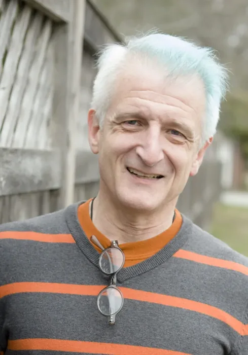
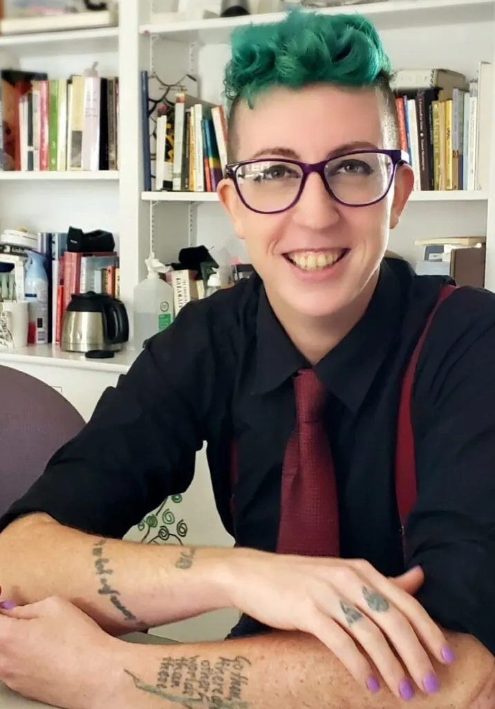
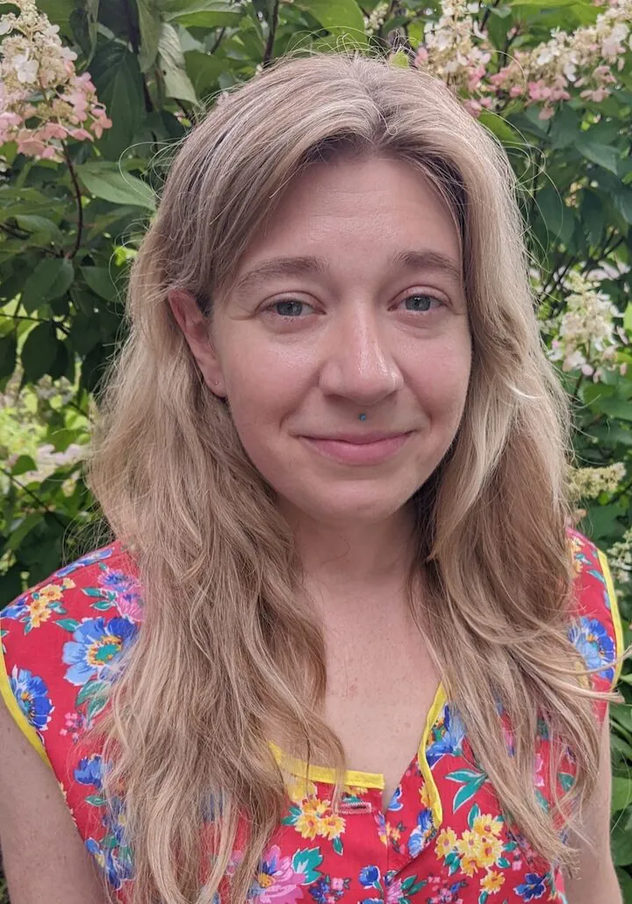
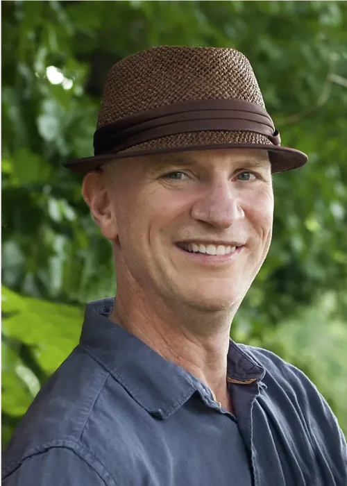
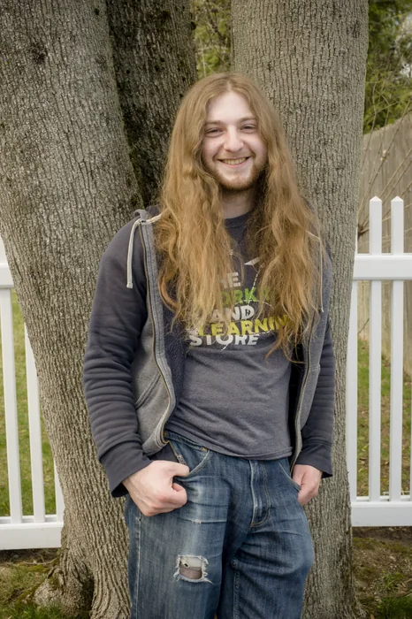
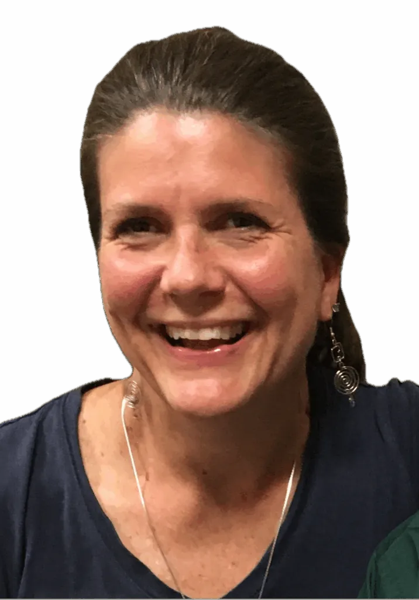
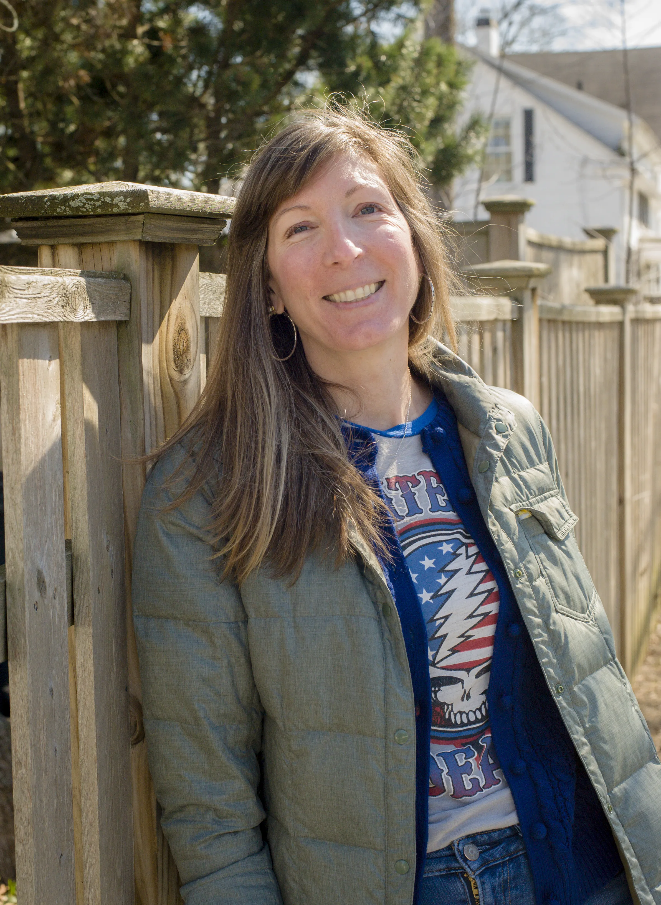

The people who show up every day to make the magic happen.
"Whatever I was doing in my work as a teacher, it wasn't teaching. It was some kind of exercise in command and control. I wanted to see engaged minds: enthused, and in full ownership of their own learning."
George founded BSLC after more than two decades in education spanning community colleges, Boston University, and a wide range of high schools and middle schools. He holds master's degrees from St. John's College (Liberal Arts) and Boston University (Religious Studies). His classes at BSLC tend to wander into literature, philosophy, and the history of ideas.
George serves on the board of trustees of Liberated Learners, the national network of self-directed education centers of which BSLC is a member.
Outside of BSLC, George hikes, birds, meditates, and practices yoga.


"The people who leave you were never your tribe in the first place. And people will gravitate towards you, the right people, will see you being your full self and be enamored of and impressed by your authenticity."
JayJay came to BSLC after years of advocacy and direct work with autistic and neurodivergent youth, shaped by their own experience as an autistic person navigating public education. At BSLC, they mentor students and build curricula around each person's actual needs and interests, including movement-based approaches for students with attention differences. JayJay believes deeply that neurodivergent young people deserve neurodivergent adults to look to.
Outside of BSLC, JayJay writes poetry, builds and repairs jeeps and arcade cabinets, and can usually be found at a CrossFit gym.
"I could see that Bay State was a place where learning could be thrilling and fun and creative, that I would learn so much myself, and that becoming a part of the Bay State community would change my life in all the best ways. I was right."
Terry joined BSLC in January 2017 and has been a cornerstone of the community ever since. She has a rich creative background spanning photography, print production, broadcast production, and advertising. For over twenty years, she has run her own portrait photography business. Terry channels all of this experience into arts programming at BSLC.

"Even without a high school degree, I was able to go to college, get jobs, and go to grad school. I had to find the educational path that was right for me. At BSLC, everyone recognizes that there are many paths to a rewarding, full life. All of those paths require education, but many of them don't require traditional school."
Amelia joined the BSLC team in 2024 after working as a philosophy professor at Kansas State University for over a decade. At BSLC, she teaches math and social science courses, with some philosophy thrown in for good measure.
In her spare time, Amelia enjoys dog-training, watching horror movies, and experimenting with audio production.
"I saw my children struggling to fit into the traditional education system I believed was inevitable until we found out they could choose their own path and rediscover the joy of learning. We've never looked back, and our family is happier for it."
Jon keeps BSLC running behind the scenes, drawing on a career that has ranged from hospitality to software, always with a focus on the people side of operations. Jon has two boys, alumni of BSLC, and is a firm believer in allowing kids the freedom to choose their educational paths with the patient guidance of a great mentor.


BSLC is a proud member of Liberated Learners, a national network of self-directed education centers united by a shared belief that young people learn best when they have real agency over their own education. The network provides member programs with collaborative support, shared resources, and a community of practitioners doing this work all over the world.
BSLC draws on the collective wisdom of this broader movement, and contributes back to it. Our work here in Dedham is part of a well-established, growing educational model with a track record across many communities.
Keith is a passionate advocate for youth empowerment and was thrilled to find a kindred spirit with BSLC, stepping in to support their mission as Board President in 2023. Shortly after relocating from Detroit to Boston five years ago, he and his wife opened their home to foster teens and found some mutual benefits with a couple of long term placements. For over a decade before coming to Boston, he actively participated in Boy Scout adult leadership witnessing firsthand the profound impact of empowering youth to chart their own course. Professionally, Keith is the Chief Information Officer at Needham Bank, contributing his leadership and technical expertise to the BLSC board. With his unwavering commitment and broad experience, Keith is a passionate advocate in BLSC's mission to empower teens to flourish through personal relationships, genuine engagement, and self-directed education.
Chandu Krishnan comes from the non-profit world with work experience in the field of sustainable development and anti-corruption. He is presently a Senior Fellow at the Fletcher School of Law and Diplomacy. He was also a Fellow at the Edmond and Lily Safra Center for Ethics at Harvard University (2013-14) and the Ash Center for Democratic Governance and Innovation at Harvard Kennedy School (2015-16). He was Executive Director of the NGO Transparency International UK (2004-2012) and served in various capacities at the intergovernmental Commonwealth Secretariat UK (1985-2004), including as Deputy Director for Strategic Planning. Chandu serves on the Town of Sharon (MA) Diversity, Equity and Inclusion Committee. In his spare time, he enjoys reading, playing the piano (with more enthusiasm than talent!) and binge-watching TV crime thriller series.

Susan is a mother of 3 adolescents/young adults, one of whom began attending BSLC in January 2023, where she found a caring community grounded in ideals of mutual respect, empowerment, and love of learning. Susan has a master's and doctorate in social work. She has worked within the domestic violence movement providing direct, community-based services, advocating for larger systemic change, and overseeing programs. Since having children, Susan has worked in higher education as adjunct faculty and faculty/field advisor at several local schools of social work. Since 2018, she has been in an administrative role coordinating an off-campus MSW program. During her down time, Susan's first choice is to spend time outside—hiking, gardening, walking the dog, and/or playing in and on the water.
Ilana is a huge fan of Bay State. She has witnessed the magic of this place up close through her two children, one of whom is currently still a student there. Ilana has been homeschooling since 2016 and has experience with a variety of homeschool communities and cooperatives. Ilana is an acupuncturist with a private practice in Newton, MA. She lives with her husband, two teenage sons, and dog in Newton.
